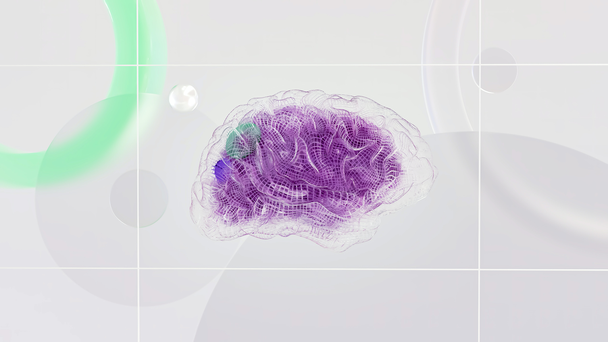
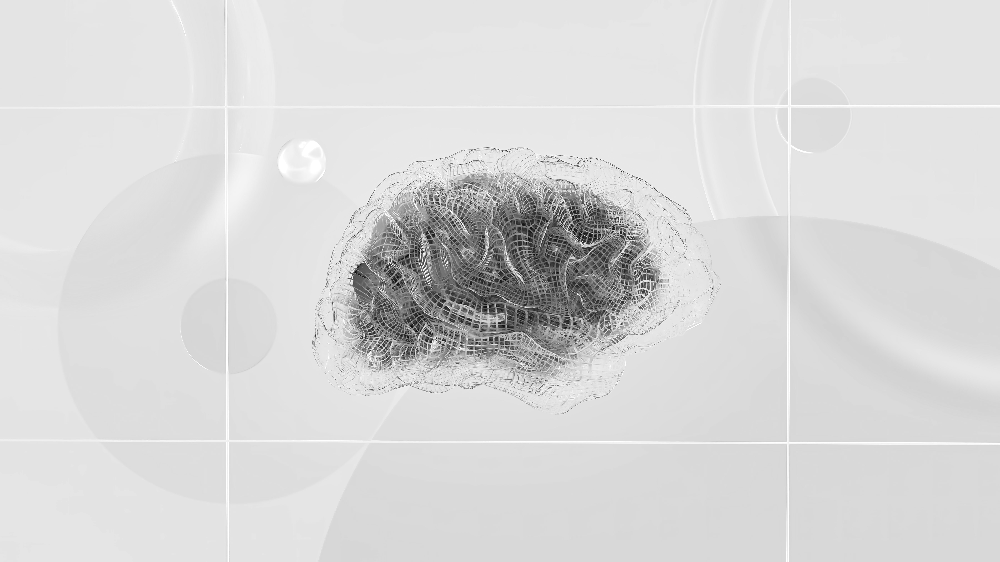

The first stage of any creative process, including my MAD project, is preparation. In the case of my project, I did a lot of research before starting to draw a plan and create a mood board and wireframes. I’ve read a couple of academic pieces on my selected topic, then watched a few YouTube videos, and had a look at similar websites. The links are provided within the pages for previous weeks.
The second stage is incubation which involves going through the resources I mentioned in the first stage, takin notes by examining concepts, looking at them from different angles, and experimenting with how they fit together.
Then followed the ideation stage, during which, I had my breakthrough moment - when I knew how to put everything together.
The fourth stage I went through was evaluation. I was trying to answer the questions:
The last stage is implementation. Once I had all my questions answered, I started building my project with confidence.
For this task, I will work with the Flux Academy’s website again.
* What are the images used for: The images used for the Flux Academy’s website are carefully selected. I would say that they perfectly align with the message each is trying to send. For exam, if one is looking for a specific course to enrol in on the website, just by having a quick look at the images they will know what the section will be.
* Can you find evidence of images used with intent, which enhances information comprehension, retention and appeal: Since all images are relevant to the text, assist comprehension and somehow communicate non-verbal concepts to audiences, I believe that they are used with intent.
* Can you find evidence of images used with intent, which enhances information comprehension, retention and appeal: Ass you can see these images are used to present courses that are offered on the website.
* What kinds of images are used? Raster, vectors, a combination? Primarily raster images, however a few vector symbols can be found.
In order to include only high-quality copyright- and royalty-free images for my website, I’m planning to use if necessary raster images from the websites:
Step one: For this step, I will be using Adobe Photoshop 2024, since I have a subscription.
Step two: Change the bit depth
Original image (This image will be added to the final version of the website):
In Photoshop, I followed Image > Mode > Greyscale
Here is the result:
Step three: Change image size and resolution
I followed the instructions and got an image of 800px width and 450 height. The resolution is 72 pixels/in
Step four: Crop Image
I’ve used the ‘crop to selection’ option to get the photo in the perfect aspect ratio for my website introduction section, as this will be the photo for it.
This is not a file that requires a transparent background, it is a background image. This is why I will be using jpg. This file type can handle all the colours in a photograph in a relatively small, efficient file size. Plus, I won’t be getting an enormous image file.
Step two: Choose an informative file name:
For the photo I just edited, I will be using the name: pixels—google-deepmind-800px-72ppi-greyscale-0-1
Step three: Exporting my image:
Step one: Try alternative methods of optimisation
Resolutions lower than 72ppi
Resolutions higher than 72ppi
The optimisation of images is a balance between visual quality and practical constraints like file size and load time.
As can be seen, greyscale images are small in file size thanks to the limited colour information. They are perfect for projects where colour is not critical. However, they lack the vibrancy a colour image offers for web use. RGB, on the other hand, is perfect for digital display. Definitely, it is more appealing for web projects, digital artwork, and anything that requires rich, vibrant colours. A drawback is the fact that it is larger in file size compared to greyscale. This might affect the website’s loading time. An alternative Indexed Color. I personally do not like this mode, since it uses a limited colour palette of around 200 colours. This drastically reduces the file size, but also the depth in raster images, and even makes them unusable for the web.
Just by having a quick look at the last two image edits, it can be seen that images with a resolution higher than 72 PPI (pixels per inch) have more detail. They are clear even when zoomed in. However, it results in larger file sizes. This can lead to slower loading times. This is why optimised photos around 72 ppi are perfect for web use. Lower resolution is fine size-wise and loads faster. However, they lack detail and can appear very pixelated, even hard to look at.
Smaller images are quicker to load, which makes them ideal for web use. A drawback is the loss of detail and the potential for pixelation (in case of under 72 ppi). On the other hand, larger images are better for detailed visuals, but the larger file sizes impact website performance. Hence, they are not efficient.